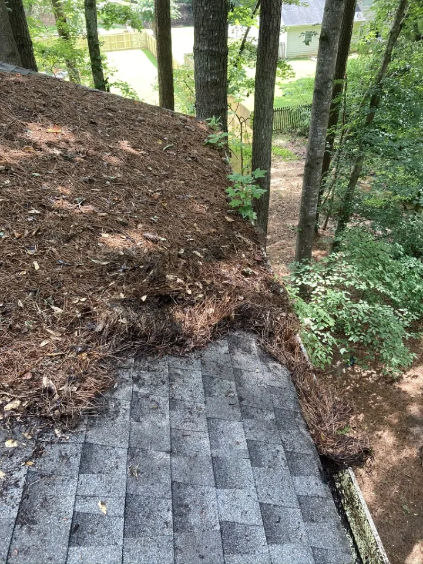
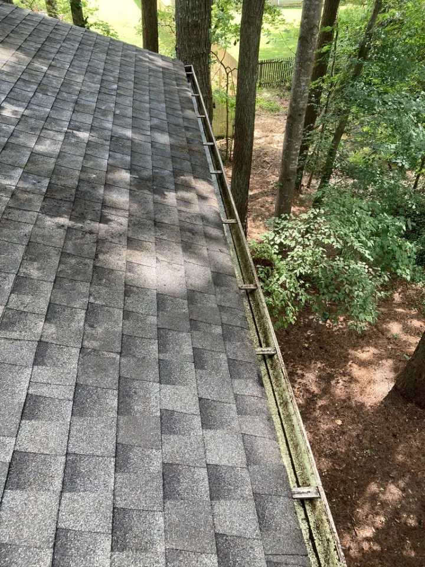

Send the basics
Name, address or ZIP, and best contact method.
Services
Cleaning, downspout clearing, and roof debris removal for homeowners who want less ladder time and fewer water problems.
Get a Free QuoteDebris that lands on your roof eventually finds the gutters. We remove leaves, pine needles, roof grit, and packed material that can push water behind fascia, over landscaping, or toward the foundation.
Downspout clogs are easy to miss until heavy rain exposes them. Clearing them helps move water away from your home instead of letting it pool near the foundation.
Request help with a clog
Before
AfterLeaves, pine needles, and branches that sit on the roof break down, hold moisture, and eventually wash into the gutters anyway. Clearing the roof surface keeps that material from becoming next month's clog.
Here's what to expect after you reach out.
Name, address or ZIP, and best contact method.
Confirm scope, access, pricing, and scheduling details.
Know the proposed work and price before scheduling.